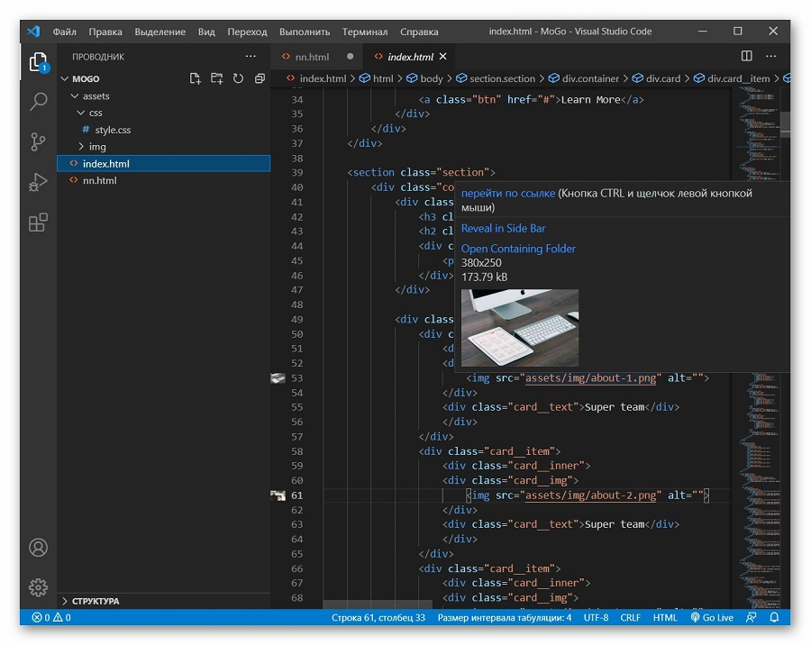

VS Code для вёрстки
Image Preview - В ходе верстки веб-страницы часто возникает необходимость в работе с изображениями, будь то отдельные графические элементы или фоновые изображения, вставленные в таблицы стилей. В этом контексте плагин Image Preview для Visual Studio Code представляет собой удобное расширение, облегчающее визуальное взаимодействие с изображениями в коде.
Плагин позволяет упростить процесс работы с изображениями, предоставляя функциональность предварительного просмотра. Когда разработчик подводит курсор мыши к адресу расположения изображения в исходном коде, плагин автоматически выводит миниатюру данного изображения. Это позволяет быстро и легко визуально оценить содержимое файла изображения, не открывая его в отдельном редакторе или браузере.
Такой подход значительно повышает удобство работы с изображениями в процессе верстки, позволяя быстро оценивать внешний вид элементов и вносить соответствующие изменения. Image Preview для Visual Studio Code способствует улучшению эффективности и точности работы с графическими ресурсами, делая процесс верстки более интуитивным и удобным для разработчика.
